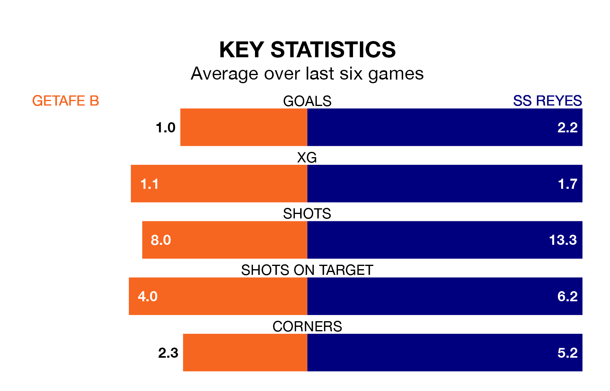

SS Reyes face Getafe B on Sunday seeking to protect their long unbeaten run in the Segunda División RFEF Group 5.
SS Reyes are unbeaten in seven, with three wins and four draws, ahead of the 10.30am kick-off.
They face a Getafe B team who have won two and drawn four over the same number of games.
With 51 goals in 30 games so far this season, SS Reyes are the league's highest scorers with 1.7 goals per game. And they are conceding fewer than average, letting in 21 goals at a rate of 0.7 per game.
Getafe B, meanwhile, are below average scorers, with 1.0 goal per game, compared to a league average of 1.1. They have also conceded 1.0 goal per game.
The away team are top of the table after 30 games, of which they have won 13 and drawn 13, earning 52 points.
The hosts are four places behind SS Reyes in fifth, with 12 wins and 11 draws putting them on 47 points.
In the last five years, Getafe B and SS Reyes have played each other on five occasions. Getafe B won one of them, SS Reyes three, and they drew once.
On average, Getafe B scored 0.8 goals and SS Reyes 1.4 in those matches.
Their last meeting was on December 3, when Getafe B won 2-1 away.
Getafe B's last match was on Sunday, a 1-0 win against CD Mensajero, with Alejandro Claverías Gutiérrez getting the goal for Getafe B.
SS Reyes drew 1-1 with CF Villanovense last time out, on April 6, with Álvaro Mayorga Eraña on the scoresheet.
Updated: 11:20 (UTC), 09/04/24